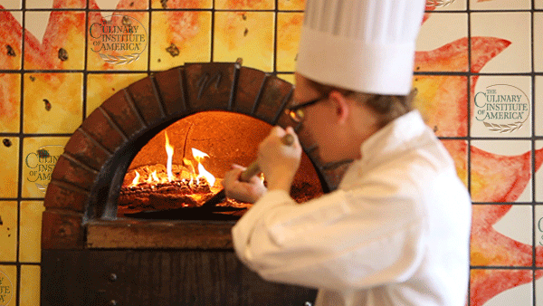

My name is Juan Carlos Fernandez Jr. This is my life. 
This page holds the many avenues of my adventures in the Culinary Arts.
This is a picture of my friend Richard and I at O'hare International Airport.
This is a picture of a roasted bell pepper.
This is a picture of carrot cupcakes that I made.
This is a picture of myself with my CCAP buddies at Dave and Busters.
This is a picture of me competing with CCAP.
This is a Collage of myself and the celebrity chefs I have met.
This is me making chocolate at a friends house.
This is a picture that my friend Fleas drew for me.
This is me and my crew at the Prostart Invitational.
This is a picture of desserts I made at NECI.
This is my diploma from NECI.
This is a picture of myself and Chef Duff.
This is a picture of eggs benedict with a roasted red pepper sauce.
This is a flounder that I cut up while on internship.
This is a picture of my knifes in my set.
This is a picture of the 1st place Paella that I made.
This is a picture of me and my fellow chefs.
These are some pies that I made while at NECI.
This is some of the Ravioli that I made when I was interning at Piccolo Sogno.
This is a roasted pepper relish that I made working at the Union League Club of Chicago.
This is a soup that I came up with at NECI.
This is the chef jacket I wore while working at Lincoln Park Zoo.
This is an ostrich that I met when working at Lincoln Park Zoo.